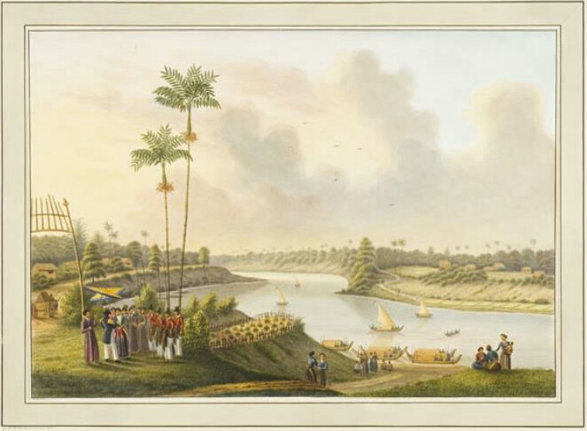
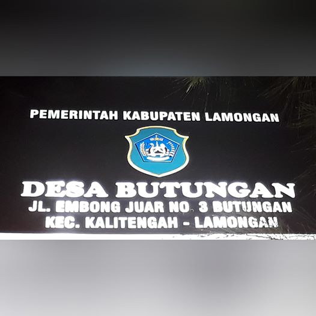
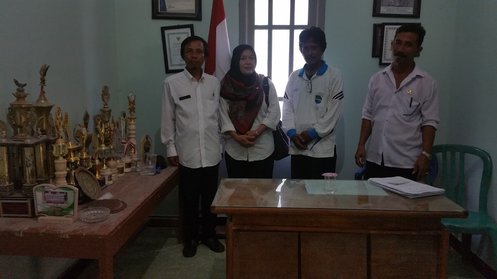
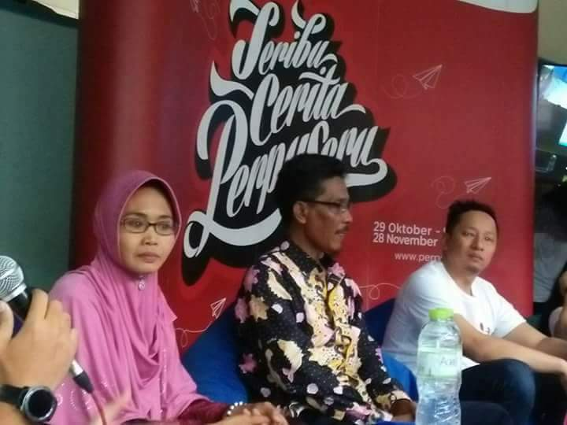
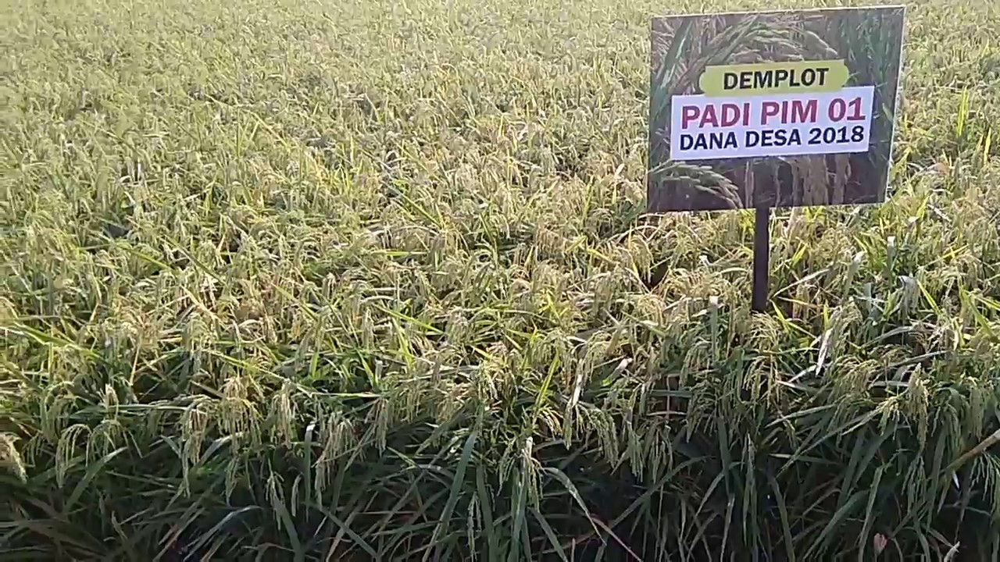

BUTUNGAN
Desa Butungan merupakan sebuah desa di bantaran sungai bengawan solo yang memiliki sejarah yang unik dan berita berita yang membanggakan
Sejarah Desa Butungan
Sejarah Tutur, berdasarkan sejarah tutur yang berkembang selama bertahun-tahun dan turun-temurun di masyarakat sekitar di tempat tersebut.
Pada zaman dahulu, sungai bengawan solo yang mengalir dari solo hingga melewati sebuah daerah di lamongan yang merupakan jalur transportasi yang paling utama untuk perdagangan dan transportasi sehari-hari. Karena sungai tersebut merupakan sungai terpanjang di pulau jawa maka tidak heran jika sungai tersebut menjadi sentra perdagangan dan transportasi pemerintahan yang menghubungkan dari Pesisir Timur Kabupaten Gresik dan Surabaya menuju pedalaman Gresik, Lamongan, Tuban, Bojonegoro, Ngawi Sragen sampai ke Solo.
pada suatu hari pernah berlayar sebuah perahu besar yang memuat jagung, kemudian karena suatu hal terjadi akhirnya perahu tersebut tenggelam beserta jagung yang dibawanya, dengan adanya perahu besar yang berlayar maka dapat disimpulkan bahwa tempat tersebut adalah sebuah sungai yang besar.
Selanjutnya, masih berdasarkan sejarah tutur di atas, sampai saat ini ketika di Desa Butungan terjadi hujan deras, maka di tempat rawa tersebut terkadang akan muncul penampakan centik perahu (bagian ujung perahu) dengan diiringi sayup-sayup terdengar suara gamelan yang sedang ditabuh. Apabila hal itu terjadi, hal itu merupakan pertanda bahwa tanaman jagung di Desa Butungan akan tumbuh subur dan hasil panen akan melimpah, Wallohua’lam Bisshowab.... dan pada kenyataannyajagung merupakan penghasilan utama Masyarakat Desa Butungan disamping tanaman padi.
Seiring perkembangan zaman dan sampai saat ini tempat atau yang kini seperti rawa tersebut akhirnya biasa disebut “BANBUNTU” yang merupakan kepanjangan dari Bengawan Buntu atau Bengawan Buntu. Jika dipandang dari sudut etimologi, kata “buntung” jika diberi akhiran “an” maka akan menjadi “buntungan”, dan kata “buntungan” inilah yang akhirnya sering dipakai Masyarakat Desa Butungan dan sekitarnya menyebut kawasan Desa Butungan, dan karena pengaruh dialek dan idialek serta ucapan yang turun temurun, berawal dari kata “buntungan” akhirnya kini menjadi “butungan” yang saat ini menjadi nama sebuah kawasan atau Desa yaitu “Desa Butungan”.
Letak Geografis
Geografis, secara geografis tempat di Desa Butungan hampir sama seperti kondisi alam sungai Bengawan Solo sekarang yang terletak di sebelah utara Desa Butungan. Beberapa kesamaan tersebut antara lain;
a). Struktur tanah bagian dasar rawa merupakan tanah lempung berpasir berwarna kuning coklat kemerah-merahan
b). Tanah sepanjang bantaran rawa merupaka tanah tegalan
c). Sumber air di sekitar lokasi sangat dangkal dan tawar, sedangkan sumber air yang jauh dari lokasi terasa asin; d). Luas lokasi tersebut hampir sama dengan luas Bengawan Solo.
maka tidak heran bahwasanya daerah tegalan di bantaran sungai bengawan solo jika musim hujan tiba daerah tersebut rawan banjir dan terkadang merugikan pekebun
Desa Butungan berada di wilayah Kecamatan Kalitengah yang berbatasan :
Sebelah Utara : Desa Bangeran Kabupaten Gresik
Sebelah Timur : Desa Kalitengah
Sebelah Selatan : Desa Dibee
Sebelah Barat : Desa Pengangsalan
Desa BUTUNGAN mempunyai 3 Dusun, Yaitu : Dusun BUTUNGAN, Dusun NGIPRAK, Dusun KEPOH.
News
Butungan memiliki banyak cerita diantaranya adalah sebagai berikut :
1. PEMERINTAHAN DESA BUTUNGAN KALITENGAH LAMONGAN. Menciptakan Desa Yang Sehat Damai dan Bermartabat.
Pemerintahan Desa Butungan Kecamatan Kalitengah Kabupaten Lamongan benar benar ingin membuktikan keguyuban, kekompakan dan keseriusanya dalam membangun Desanya. Dengan berbagai program telah di tetapkan demi kemajuan desa. Sumaroh selaku Kepala Desa Butungan, Saat di temui di kantornya menuturkan. Semenjak memegang pucuk pemerintahan di desa ini benar benar merasakan adanya banyak perubahan yang ada di desanya, terutama dengan adanya program Bantuan Keuangan Dana Desa yang sangat berdampak pada infrastruktur desa dan roda perekonomian desa. Berbagai Program di Tahun 2015 telah Di realisasikan sesuai juklis dan rapp yang telah di musyawarahkan bersama semua lembaga Desa, mulai dari Pembangunan Jembatan antar dusun, rabat beton jalan Dusun Butungan, Jalan poros Dusun Kepoh, Pada sektor pemberdayaan kami optimalkan pada penghijauan lingkungan desa yang kini bisa terealisasi semuanya 100%...... see more...
2. Modal Keripik Manis, Bisa Eksis dengan Artis
Cerita bermula dari seorang ibu rumah tangga warga Desa Butungan yang berkeinginan untuk memiliki kegiatan yang produktif di rumahnya. Warga tersebut bernama Ibu Naimah. Ibu Naimah dengan keinginannya tersebut mencoba melihat berapa harga buah sukun yang ada di depan rumahnya apabila dijual langsung tanpa diolah.... see more....
3. Sektor Pertanian
 Petani Butungan Kalitengah Kembangkan padi unggul PIM 1, lihat! See More...4. Sektor Kebersihan Lingkungan

Butungan Merupakan desa yang beberapa kali memenangkan lomba green and clean yang ada di kabupaten lamongan. Lamongan sendiri merupakan Kabupaten yang memiki piala Adipura Kencana karena kebersihan dan penataan lingkungan yang bagus See More..